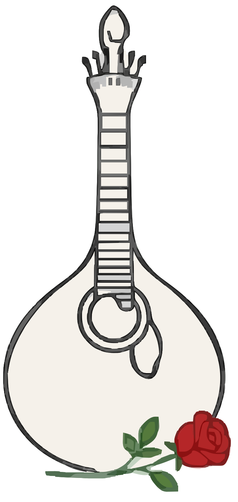
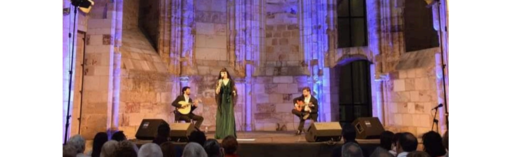
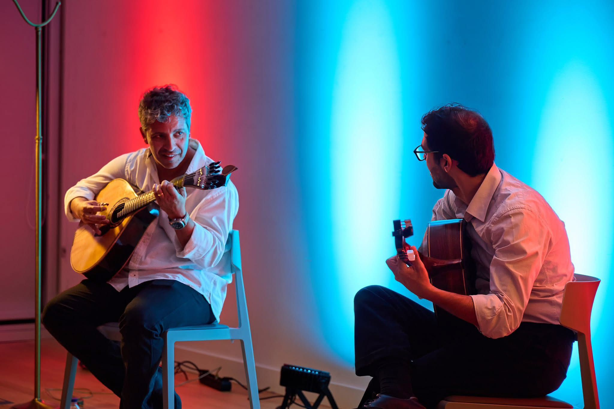
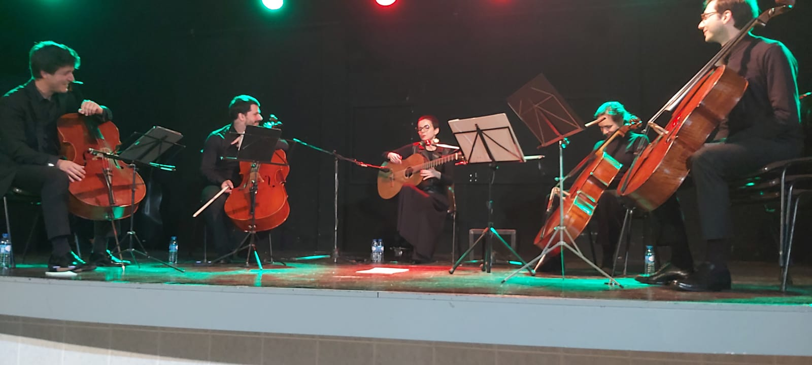
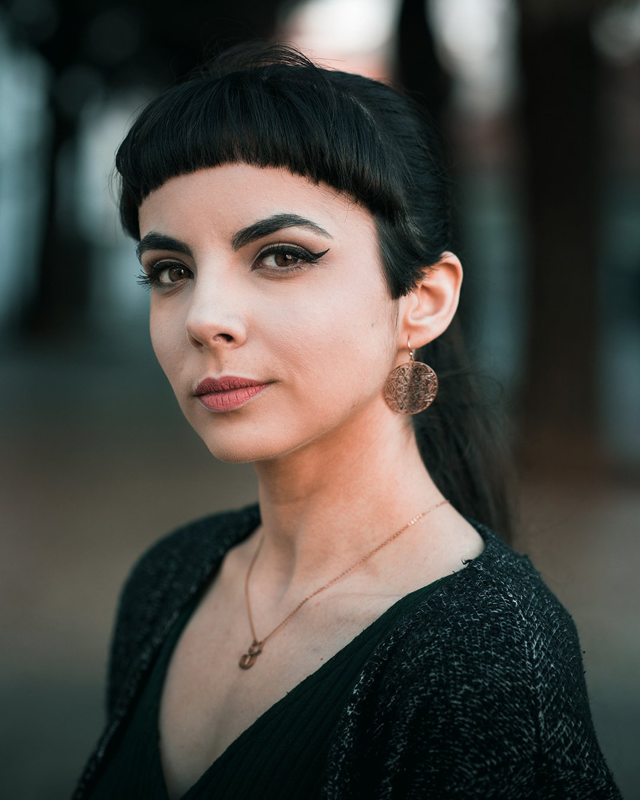

01
O diabo está nos detalhes: a nossa especialidade.
Cada espetáculo é pensado ao pormenor: do repertório ao espaço, do público ao momento.
Sou a Onofriana.
Nasci de um nome que a História quase deixou cair no silêncio.
Maria Severa Onofriana foi a primeira voz que o Fado reconheceu como sua. Severa, o nome que o mito glorificou. Onofriana, mais despercebido, íntimo, lembra parte de uma história que permanece por desvendar.
É esse o meu nome para o mundo.
Quero ir aonde o Fado seja escutado e apreciado, não como pano de fundo, distração ou curiosidade, mas presença cultural viva, com pulsação e memória.

A Onofriana dedica-se à curadoria, produção e programação de eventos de Fado em contextos culturais, institucionais e privados. O seu nome é inspirado na mítica e misteriosa figura de Maria Severa Onofriana, a primeira fadista documentada na História do Fado.
Trabalhamos com uma rede alargada de profissionais experientes, fadistas e instrumentistas, para formar diferentes conjuntos adaptados a cada contexto: sessões acústicas e intimistas, palcos, noites de Fado tradicionais e temáticas, espetáculos para escolas, teatros e auditórios, festividades locais, etc.
Marcamos a diferença pela qualidade e pelas nossas ofertas de programação, desde conjuntos de Fado integralmente femininos à criação exclusiva de letras de fados personalizadas para celebrar pessoas ou ocasiões especiais.
Cada espetáculo é pensado ao pormenor: do repertório ao espaço, do público ao momento.
Conjuntos de Fado integralmente femininos e letras personalizadas para celebrar pessoas ou ocasiões especiais.
Assumimos a parte musical ou toda a logística: som, luz, coordenação e conceptualização.
Tradicional conjunto de Fado
Fadista(s) • Guitarra portuguesa • Viola de Fado • Baixo acústico (opcional)
Pedir orçamento
Conjunto de Fado integralmente Feminino
Fadista(s) • Guitarra portuguesa • Viola de Fado
Pedir orçamento
Repertório instrumental
Guitarra portuguesa • Viola de Fado • Baixo acústico (opcional)
Pedir orçamento
Voz & Quinteto de cordas
Fadista • Viola de Fado • Violino • Viola d’ arco • Violoncelo • Contrabaixo
Pedir orçamento

A curadoria artística da Onofriana é da responsabilidade de Marta Rosa, fadista, violista, letrista e compositora. Licenciada em Ciências Musicais pela Universidade Nova de Lisboa, e em Canto pela Escola Superior de Música do Instituto Politécnico de Lisboa, construiu o seu percurso entre as casas de fado e outros palcos, a criação e a direção artística. É uma das poucas mulheres a tocar viola de Fado profissionalmente.
Foi responsável pela curadoria e programação do restaurante Povo Lisboa, um dos espaços culturais de referência da cidade e casa de múltiplas residências artísticas que marcaram o percurso de algumas vozes do Fado, incluindo o dela própria. Foi membro fundador do grupo de Fado As Mariquinhas, constituído exclusivamente por mulheres.
Conte-nos o contexto, o espaço e a ocasião.
Respondemos em 48 horas.
Cada espetáculo começa antes da primeira nota. Começa numa conversa sobre o lugar, o momento e quem vai escutar.
Se quer levar o Fado ao seu evento, escreva-nos. Conte-nos o contexto, o espaço e a ocasião.
fado@onofriana.ptA tradição não existe sem um sentido. Trabalhar com um património vivo, e em constante transformação, é fazer parte de uma história inacabada, de raízes profundas, e marcada pela forte herança feminina que desbastou caminhos para o mundo — desde a primeira fadista.
A Onofriana ("nós") respeita a sua privacidade e está comprometida em proteger os seus dados pessoais nos termos do Regulamento Geral de Proteção de Dados (RGPD — Regulamento UE 2016/679) e da Lei 58/2019 de 8 de agosto.
Esta política descreve como recolhemos, utilizamos e protegemos as informações recolhidas através do website onofriana.pt.
O responsável pelo tratamento dos seus dados pessoais é a Onofriana. Para exercer os seus direitos ou esclarecer qualquer dúvida sobre privacidade, pode contactar-nos em fado@onofriana.pt.
Recolhemos os seguintes tipos de dados:
Este site utiliza cookies para garantir o funcionamento adequado e para compreender como é utilizado. Classificamos os cookies em três categorias:
Pode gerir as suas preferências a qualquer momento clicando em "Cookies" no rodapé do site.
O tratamento baseia-se no seu consentimento (cookies analíticos, email voluntário), no interesse legítimo (responder a pedidos de informação) e em obrigações legais quando aplicável.
Não partilhamos os seus dados com terceiros para fins de marketing. O Google Analytics pode transferir dados para servidores localizados fora do Espaço Económico Europeu (nomeadamente nos EUA), ao abrigo de cláusulas-tipo aprovadas pela Comissão Europeia e do Data Privacy Framework EU-US.
Conservamos os dados apenas durante o tempo necessário para a finalidade pela qual foram recolhidos, ou nos prazos legais aplicáveis. Os dados do Google Analytics são conservados por 14 meses por defeito.
Para exercer estes direitos escreva para fado@onofriana.pt.
Este site integra conteúdo do Spotify (embed de playlist), que poderá utilizar os seus próprios cookies, sujeitos à política de privacidade do Spotify.
Esta política pode ser atualizada. A versão em vigor está sempre disponível nesta página. Última atualização: abril de 2026.
Siga-nos.
Ouça alguns dos fados preferidos da Onofriana